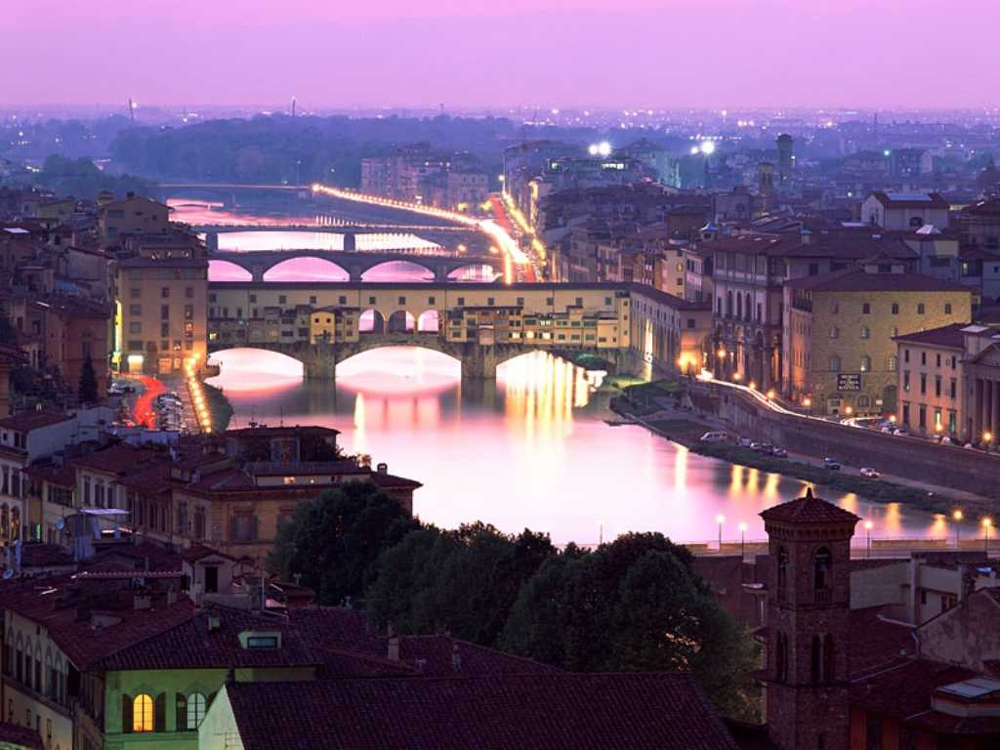
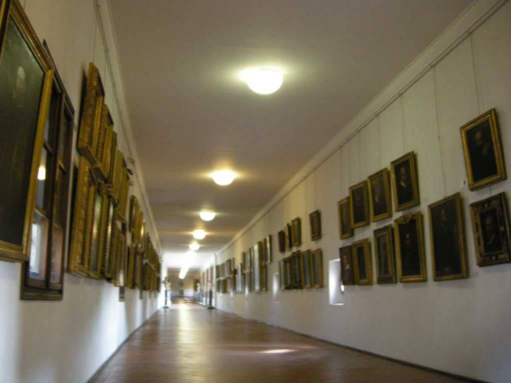
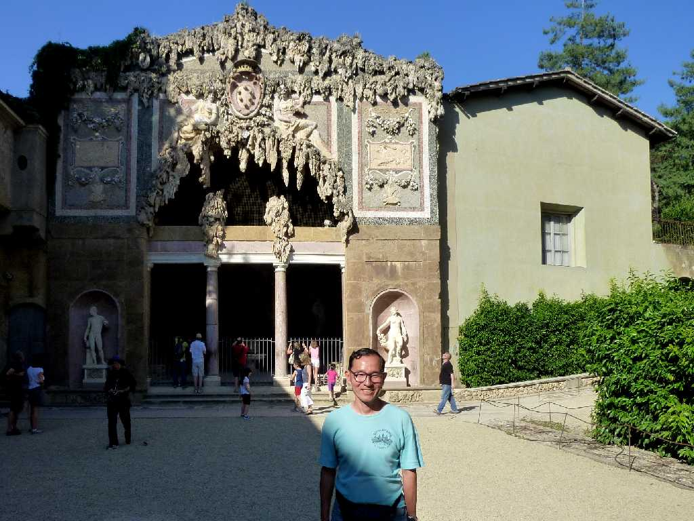

August 1973 Ponte Vecchio Firenze
街の顔フィレンツェ最古の橋ポンテ・ヴェッキオは「古い橋」の意味でかつてはウフィッツィ宮殿と川向こうのピッティ宮殿を結ぶ渡り廊下の役割をしていた 上を貴族や商人が下を庶民が通っていたが１６世紀には金銀細工の店が建ち並び今も当時と同様の賑わいを見せている

Corridoio Vasariano Firenze
約４０年ぶりの再訪問で ヴァザーリの回廊を見学

June 26 2011 Palazzo Pitti Firenze